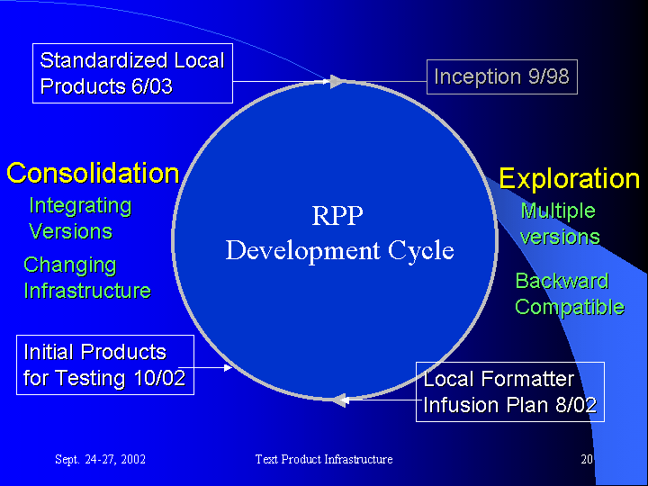
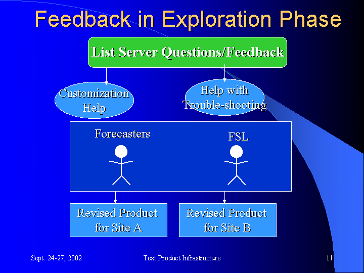
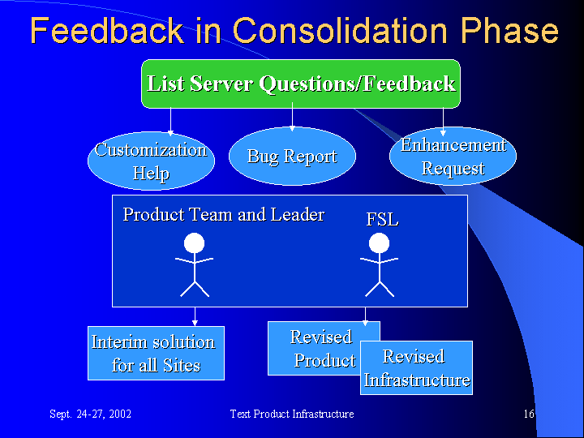

Textual forecasts are among the most widely known products of the National Weather Service. With the advent of digital forecasting it is possible to produce these products automatically, allowing forecasters to focus on meteorology rather than typing, and giving consistency to the products. There is an established set of text formatters included in the IFPS system. The FSL development team is developing an alternative set of text formatters which produce standard text products directly from the digital forecast database.
The GFESuite text formatters are being developed within the Rapid Prototype Process (RPP), which delivers software in a rapid fashion and incorporates forecaster feedback to quickly improve the system. This section examines the phased development of the formatters and how the feedback process works in each development phase.

By July of 2002, many local offices were successfully running
GFESuite formatters. However, the nature of this Exploration Phase led
to multiple versions of products, and support for these local versions
became a challenge. At this time, OS&T developed the Local
Formatter
Infusion Plan which tasked the NWS, in concert with FSL, to develop a
core set of GFESuite text formatters as an alternative approach to the
established IFPS text product generation providing potential risk
reduction for the September 2003 IOC. By providing a core set of
standardized local formatters, the number of versions in the field will
be minimized while still allowing local customization. A Local Text
Formatter Team was formed consisting of forecasters representing all
regions and the FSL development team.
Thus, we created a new set of infrastructure modules to replace the older ones from the Exploration Phase. The older modules will continue to be included in the GFESuite until the new products are mature so that existing versions of products will still run. This will ease the transition to the new products.
In October 2002, an initial set of new products was released for testing and field feedback. The products were of varying maturity levels. In general, products in a tabular format had higher levels of maturity than the narrative-type products, which are more complex. As the field becomes comfortable with each product, they may choose to use them operationally.

The feedback process in the Consolidation Phase works differently, as follows: A site installs the new product and makes local customizations according to established "customization points" documented for that product. When a bug or desired enhancement is identified, instead of modifying the code at the local site, the focal point submits a report to the listserver. The GFESuite Local Formatter team responds to the problem or request. Often, due to the flexible nature of Python, an interim solution can be given to the site. This solution would then be available to all AND can be integrated back into the standard product and infrastructure. As a result, the individual sites are satisfied and the Local Formatter Team has spent time on new product development. There is one solution to the same problem, which makes the products easier to understand and maintain.
Using this feedback process, which minimizes local versions, a new
release is less likely to break the products. If there are
infrastructure changes that will effect products, they can be
identified. The time to adapt the products would be more on the order
of
hours rather than days or weeks. In this scenario, progress on
the
new products has been increased and the feedback process has served the
purpose of developing mature products for the benefit of all.
During the Consolidation Phase, there might be some cases where the
field offices are asked to settle for less functionality in the short
term in order to help build fully featured and maintainable products in
the long term.

Conclusion
The target date for operational GFESuite Local Text Formatters is
June 2003. The goal is to have a set of fully featured and
customizable products. At this time, the infrastructure will be
stable and mature. As a result of supporting the needs of a
diverse set of core products, the revised infrastructure will contain
excellent tools for field forecasters to begin a new Exploration Phase,
creating Modernized Products, the original goal and intention of the
GFESuite text formatters.